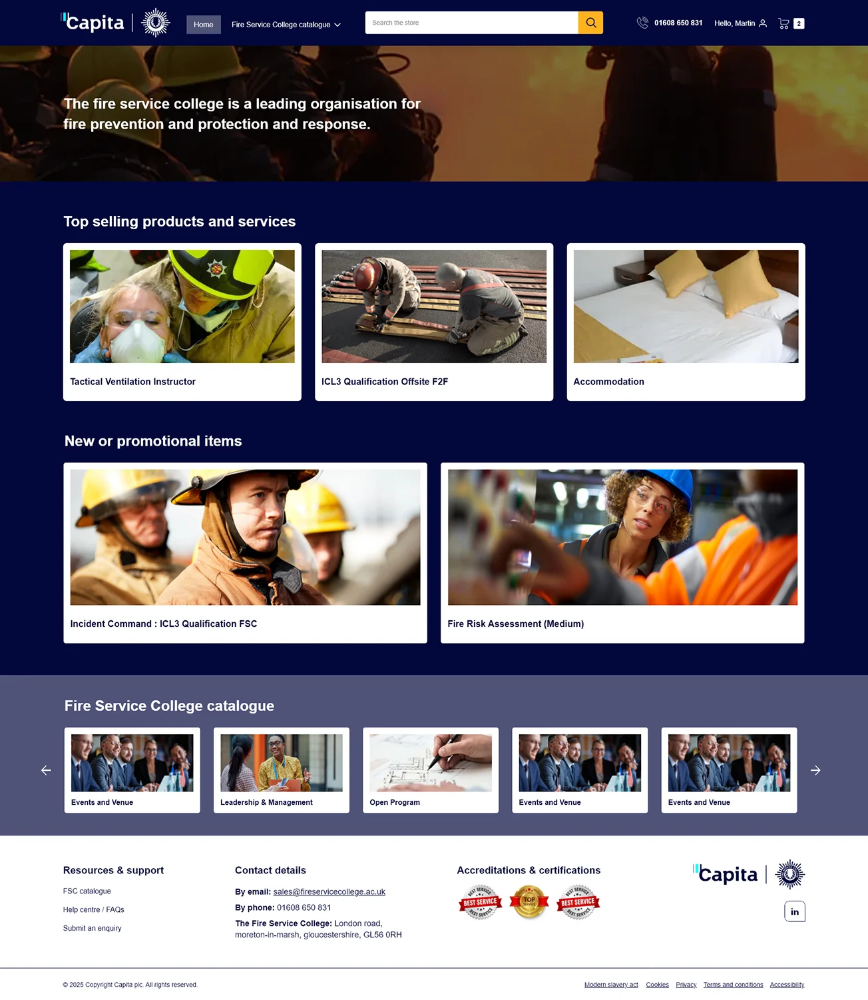
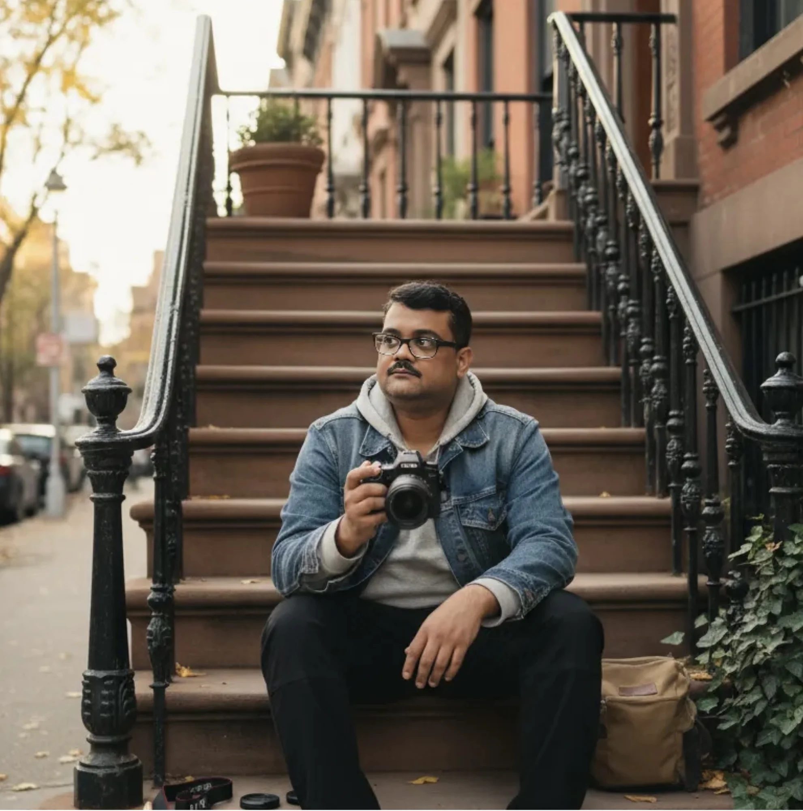
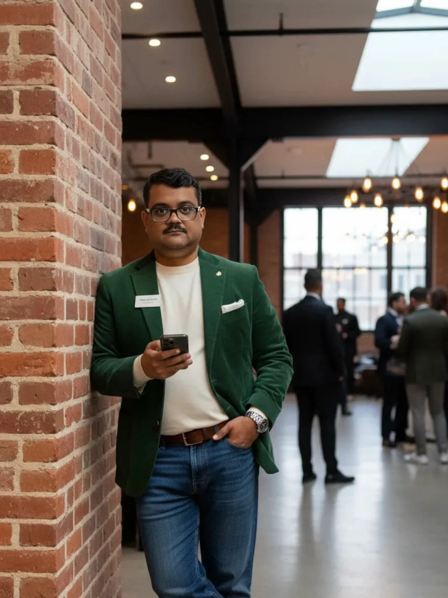

Evolution of Sales (EOS) Platform
Led an end-to-end Salesforce transformation at Capita: automated quoting, customer journeys and Figma/XD prototypes for B2B buyers.
+52%Projected sales
−35%Fulfilment time
−40%Support tickets
Strategic AI UX/UI Design Leader with 16+ years helping enterprises and governments turn complex, regulated systems into intuitive, accessible products, across Healthcare & Benefits, HR Tech, Public Safety, Retail eCommerce and Legal Tech.

Trusted by industry leaders
My Process
A systematic, user-centered approach that balances creativity with strategic thinking.
Deep dive into user research, stakeholder interviews, and data analysis to uncover real problems worth solving.
Synthesize insights into clear problem statements, personas, and success metrics.
Rapid prototyping from sketches to high-fidelity tested solutions.
Close collaboration with developers, QA testing, and post-launch measurement to ensure real-world impact and continuous improvement.
Featured Work
Selected work, most recent first: B2B commerce, global web, UK Government and AI experience design.

Led an end-to-end Salesforce transformation at Capita: automated quoting, customer journeys and Figma/XD prototypes for B2B buyers.
Redesigned the UI and interaction flow, integrated Workday job search and built a design library used by 15+ designers across 5 teams.


UX audit and GDS-standard redesign of a platform serving 50,000+ students, including a 3-month onsite assignment in London.
A redesigned console for monitoring, debugging and governing fleets of enterprise AI agents, built around triage: what needs attention first, then fleet to agent to trace.
Testimonials
A LinkedIn recommendation from my manager at Capita, plus feedback from people I’ve worked with.
Yogesh brings a rare combination of positivity, curiosity, and action. Even in challenging moments, he maintains a motivated and forward-thinking mindset.
His curiosity for innovation is inspiring, and it’s been a pleasure to work alongside someone with such a positive spirit. Yogesh doesn’t just explore new ideas, he takes action. His self-driven approach to learning about GenAI has been impressive. He’s earned multiple certifications in GenAI, Salesforce Admin, AWS Hyperscaler, and Azure OpenAI Foundry, demonstrating a strong commitment to continuous learning and innovation.
Beyond certifications, Yogesh has made meaningful contributions across design, research, testing, analysis, and delivery. He has played a key role in coordinating developers and designers to ensure outcomes meet expectations and also align with strategic business goals. His agentic use of GenAI tools has helped drive efficiency and impact.
Yogesh has demonstrated strong cross-functional capabilities in design, research, and delivery. He’s led the creation of intuitive, user-centred interfaces aligned with strategic goals, supported by UX research and user interviews. His end-to-end testing across sprints ensured quality and usability, while his ability to translate stakeholder needs into actionable user stories in Azure DevOps helped streamline development. He has consistently fostered collaboration between developers and designers, ensuring outcomes meet expectations. His involvement in implementing the B2B Salesforce environment contributed to seamless integration and reliable functionality. Yogesh also brings a strong awareness of digital accessibility in practice, ensuring inclusive design across platforms.
It’s been a genuine pleasure to work with Yogesh: his energy, curiosity for emerging tech and innovation, and dedication make him a standout contributor. He’ll be a benefit to any company lucky enough to have him on board.
"Yogesh brings a rare combination of strategic thinking and hands-on design excellence. His work on the B2B Commerce platform transformed how our sales team operates the UX improvements directly contributed to our revenue growth."
"Working with Yogesh on the government accessibility project was exceptional. He championed WCAG compliance not as a checkbox exercise, but as a genuine commitment to inclusive design. The results speak for themselves."
"Yogesh mentored our junior designers and elevated the entire team's capability. His systematic approach to design from research to delivery became the gold standard for how we approach projects now."

About Me
I’m a Principal UX Architect and Senior Product Designer with 16+ years of experience, 12+ of them in UX and enterprise design. I design accessible, user-centred products across SaaS, commerce, government, workforce, legal tech and AI platforms.
I specialise in WCAG 2.1 AA accessibility, design systems and governance, and human–AI interaction: turning complex, regulated workflows into products people trust and adopt.
Selected through L&T Infotech’s innovation programme: an agentic AI framework that applies semiconductor-domain context to automate engineering workflows.
UX vision, design roadmaps, information architecture, journeys and user flows.
WCAG 2.1 AA and UK GDS, from audit and heuristic evaluation to compliant delivery.
Human–AI interaction, multi-agent journeys, trust and progressive disclosure.
Reusable components, standards and governance adopted across teams.
Neura Belden BHVA, a GenAI multi-agent virtual assistant. I set the UX vision and roadmap, designed 4 end-to-end agent journeys and specified 6 flagship features.
Led the EOS Salesforce B2B Commerce transformation, the Capita.com global redesign and the AXELOS UK Government programme, including an onsite assignment in London.
FMLA and absence management for 10,000+ employees. Training time down 30%, satisfaction up from 3.2 to 4.5, and 95% design-to-development accuracy.
Moved the Consilio eDiscovery suite from a legacy desktop app to the web for 5,000+ legal professionals. User errors down 40%, processing time down 25%.
Front-end and usability engineering for banking, insurance and product-engineering clients: the foundation for my enterprise UX work.
Writing
Sharing lessons learned from 16+ years of designing enterprise products.
2024
Headlines pop up daily about AI replacing UX designers. These predictions generate buzz but fail to capture what really makes design valuable.
Read on LinkedIn2024
Exploring how AI is fundamentally reshaping the digital landscape and what it means for user experience design.
Read on LinkedIn2024
In design, particularly in user interfaces (UI), balance is crucial. Balance makes an interface attractive and pleasant to use.
Read on LinkedIn2024
Unlocking the power of data-driven design decisions in an era where user experience can make or break a digital product.
Read on LinkedInGet in Touch
Open to senior and lead UX roles across PAN India: Bangalore, Pune, Hyderabad, Mumbai, Chennai, Noida, Delhi and Lucknow.
Start a Conversation